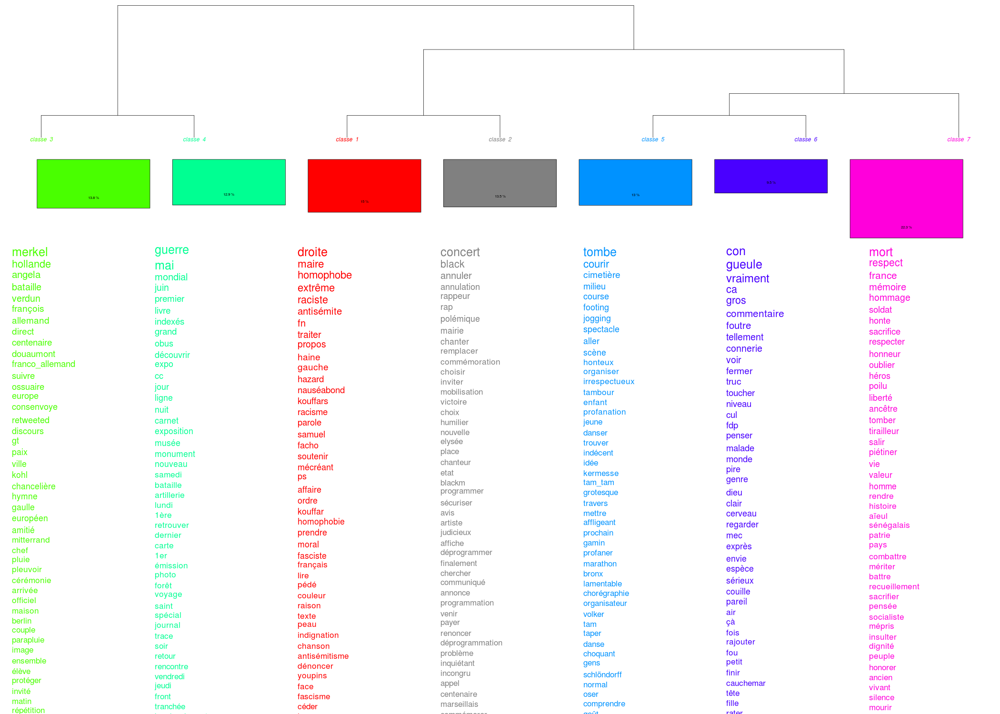

usages scientifiques du web : intérêt, méthodes et
limites ?
frédéric clavert frederic.clavert@uni.lu /
inactinique.net séminaire « une plus grande guerre »
16 janvier 2024
qui suis-je?
histoire des relations internationales
histoire numérique
digital memory studies
#ww1 / le centenaire de la grande guerre sur twitter
introduction: le goût d’un jour de fête?
Clavert, Frédéric, and Déborah Paci. ‘“Le Goût d’un Jour
de Fête”? Commemorating the End of the Second World War on Twitter
during the Lockdown: A Comparison between France and Italy’. The
Covid-19 Pandemic Memory. Remembrance, Commemoration, and Archiving in
Crisis, edited by Orli Fridman and Sarah Gensburger, Palgrave Macmillan,
2024.
« Ce 8 mai ne resemble pas à un 8 mai. Il n’a pas le goût d’un
jour de fête »
commémorer en ligne pendant le centenaire? L’exemple de twitter

que conclure?
les “cadres” de la mémoires collective de la Grande Guerre restent
les mêmes en ligne ou hors-ligne (une mémoire très centrée sur le Poilu
mort pour la France)
multiplicité des acteurs?
différences nationales
fonction des traditions commémoratives
ex: Royaume Uni (importance des champs de bataille)
rôle différent des musées?
question de la vitesse de circulation des informations (ie
controverses)
nouveauté: les pratiques
Les commémorations en ligne, exemplaire de la politique mémorielle
française?